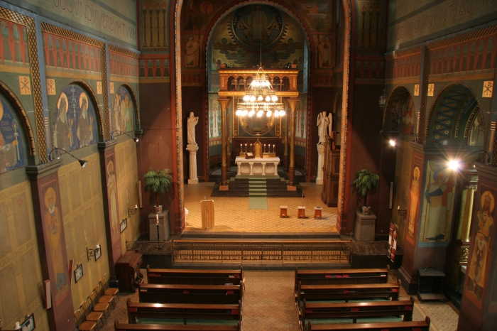

<?php
	$tabulka = true;

	require ('_include/php/zaklad.php');

	titulek ('Beuronské umìní - opatství sv. Gabriela');

	menu ('Jít dopøedu','gabriel-dopredu-01.html');
	menu ('Otoèit se doleva','gabriel-levo-luneta-01.html');
	menu ('Otoèit se doprava','gabriel-pravo-svetec-01.html');
	menu ('Podívat se nahoru','gabriel-strop-01.html');
	menu ('Vyjít ven','gabriel-zpet.html');

	zahlavi ();
?>



<p>
	Hlavní loï - øíká se, ¾e nìkteøí lidé jsou po vstupu do kostela pøekvapeni, nìkteøí udiveni a nìkteøí jsou pøímo ¹okováni. Kam patøíte vy?
</p>

<?php
  zapati ();
?>
